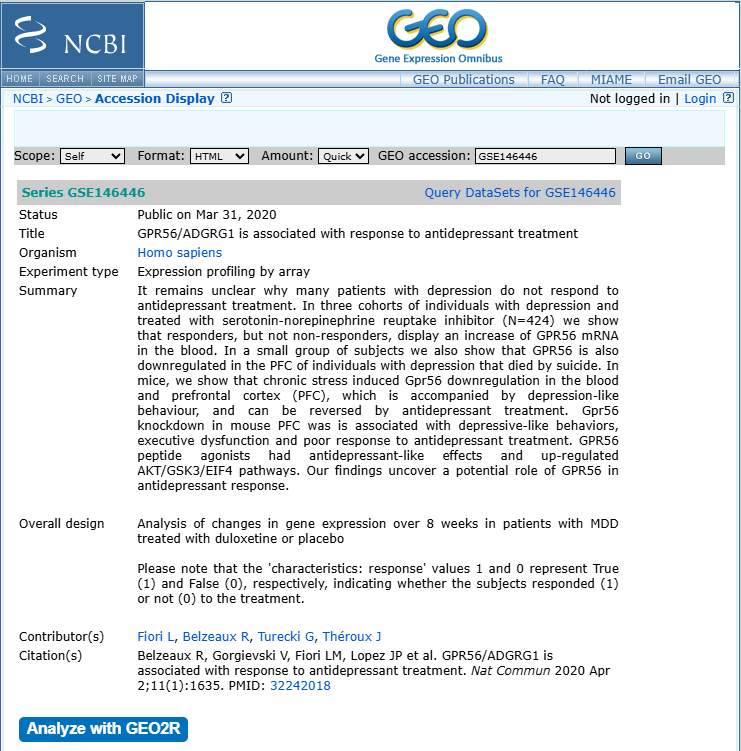

GSE record 읽기

GSE146446 예시. Title, Organism, Experiment type, Summary와 Overall design을 차례로 확인합니다.
연구 질문
어떤 표현형과 비교를 목적으로 수집했는가?
실험 설계
조직, 시점, 치료, 반복측정과 제외조건은 무엇인가?
선정 체크리스트
| 항목 | 확인 질문 |
|---|---|
| 연구 목적 | 내 가설과 비교가 일치하는가? |
| 조직·세포 | 서로 다른 조직이나 세포주가 혼합되지 않았는가? |
| 표본 수 | 각 그룹에 생물학적 반복이 충분한가? |
| 그룹 정보 | Control과 Case를 명확히 구분할 수 있는가? |
| 공변량 | 나이, 성별, 약물, 시점, batch를 확인할 수 있는가? |
| 플랫폼 | 여러 GPL이 섞였는가? annotation이 제공되는가? |
| 파일 | Series Matrix, supplementary file 또는 raw data가 있는가? |
| 논문 | 원 논문에서 실험·제외 기준을 확인했는가? |
분석 비교 정의하기
Research question:
Which genes differ between Disease and Control?
Test group: Disease
Reference group: Control
Contrast: Disease - Control반복측정 주의: 같은 환자의 치료 전후 샘플은 독립 표본이 아닙니다. 단순 2그룹 GEO2R보다 paired design 또는 환자 효과를 포함한 limma 모델이 필요할 수 있습니다.
실습 기록표
- GSE accession과 원 논문 DOI
- Control/Case 정의와 각 표본 수
- 조직, 플랫폼, 시점과 치료
- 포함·제외할 GSM
- 예상되는 공변량과 batch
- 분석할 contrast와 방향